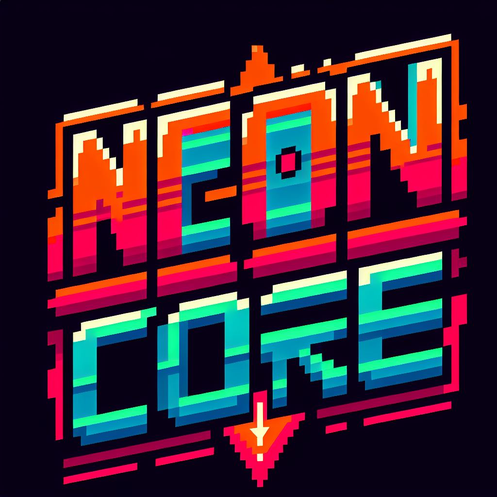

Sobre o Jogo
Neon Core é um roguelike de deckbuilding cyberpunk onde você assume o papel de um piloto de mecha em combates
táticos.
Inspirado por Slay the Spire e Deep Sky Derelicts, o jogo combina gestão estratégica de cartas,
escolhas narrativas e customização de mechas.
Cada run acontece em um mapa gerado proceduralmente com pontos de interesse,
incluindo batalhas, eventos, lojas de peças e oportunidades de aprimoramento.
Cada derrota significa um novo começo, mas com a vantagem de desbloquear
cartas encontradas na partida anterior para futuras builds.
Gameplay
Escolha seu Mecha
Antes de iniciar a partida, o jogador escolhe um dos mechas disponíveis,
cada um com características e habilidades únicas.
Alguns exemplos:
- Titan Striker – Resistente, ataques devastadores.
- Shadow Phantom – Ágil, especialista em ataques críticos.
- Overlord Siege – Tanque pesado com perfuradores gigantes.
Cada mecha começa com um deck inicial único, representando suas habilidades e equipamentos básicos.
.jfif)
Exploração do Mapa
A tela principal exibe um mapa procedural com diversos pontos de interesse conectados.
O jogador escolhe para onde avançar a cada turno, gerenciando riscos e recompensas.
.jfif)
- Zonas de Extração – Coleta de Xenoflux.
- Batalhas – Combates contra mechas rivais.
- Estações de Reparos – Manutenção e upgrades.
- Mercado Negro – Compra de cartas e relíquias.
- Eventos Narrativos – Situações inesperadas.
Tipos de pontos no mapa
.jfif)
- Batalhas: Lutas contra outros mechas e drones inimigos. A vitória concede créditos, peças e novas cartas.
- Oficinas: Permite reparar o mecha, instalar novos módulos ou aprimorar cartas.
- Mercado Negro: Comprar relíquias, cartas raras ou peças de reposição.
- Eventos Narrativos: Situações aleatórias, como encontrar um hacker que pode modificar seu mecha ou um
mercado clandestino de armamento. As escolhas impactam a run.
- Data Caches: Locais secretos onde o jogador pode escolher entre novas cartas poderosas ou informações de
lore.
Combate baseado em cartas
.jfif)
O combate ocorre em turnos e funciona através do deck de cartas do jogador, representando habilidades, armas e
sistemas do mecha.
- O jogador tem um número limitado de ações por turno para jogar cartas.
- O deck inclui cartas de ataque, defesa, buffs e debuffs.
- Algumas cartas exigem refrigeração ou energia para serem usadas, exigindo planejamento.
- Oponentes possuem padrões de ataque previsíveis, permitindo ao jogador planejar sua estratégia.
- Alguns inimigos possuem fraquezas específicas, incentivando decks variados.
Relíquias e Melhorias
Durante a run, o jogador pode encontrar relíquias tecnológicas que oferecem efeitos passivos e mudanças
significativas no gameplay.
- Célula Nexus – +1 Energia por turno.
- Holo-Simulador – Duplicação da primeira carta jogada a cada combate.
- Nano-Reparadores – Regenera 5% da armadura após cada batalha.
- Overclocking Core – Aumenta dano das cartas de ataque em 25%, mas reduz defesa.
.jpg)